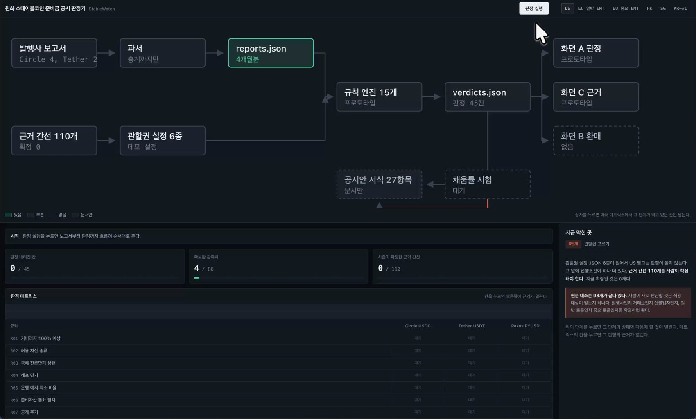

1. 분야와 제목
- 분야
- App/Web
- 제목
- 원화 스테이블코인 준비금 공시 판정기 (StableWatch)
- 한 줄 소개
- 규정이 없는 자리에 값을 제안하는 도구
- 제안
- 강인성, 디지털미디어학과
2. 배경
2.1 한국은 예금토큰으로 먼저 간다. 스테이블코인은 아직 법이 없다
| 구분 | 발행자 | 받칠 자산을 따로 들고 공시하나 | 이 프로젝트 |
|---|---|---|---|
| CBDC, 기관용 | 한국은행 | 필요 없음 | 범위 밖 |
| 예금토큰 | 시중은행 | 필요 없음, 이미 예금이다. 프로젝트 한강에서 실증 중 | 범위 밖 |
| 원화 스테이블코인 | 은행 또는 민간 컨소시엄 | 필요한데 형식이 없다 | 대상 |
예금토큰은 이미 예금이라 따로 받칠 자산이 필요 없다. 스테이블코인은 예금이 아니라서 받칠 자산을 따로 들고 그것을 보여줘야 하는데, 그 형식이 아직 없다.
2.2 은행이 발행을 시작했는데 한국에는 공시 규정이 없다
위 줄은 해외 은행의 발행 움직임, 아래 줄은 같은 시기 한국의 상태다. 한국 상태는 2026-10-04 확인 기준이다.
2.3 해외도 공시 형식은 제각각이다
| 관할권 | 공개 주기 | 외부 검증 | 법적 상태 |
|---|---|---|---|
| 미국 | 월별 구성 공개 | 등록 회계법인 월별 examination, CEO와 CFO 월별 인증 | GENIUS법 제정, 시행 예정 2027-01-18 |
| EU | 월 1회 이상 갱신(자산준거토큰) | 6개월마다 독립 감사, 결과는 통지 후 2주 안에 공개 | MiCA 스테이블코인 조항 시행 중 |
| 홍콩 | 주간 웹 갱신 | HKMA가 수용하는 주기로 attestation | 스테이블코인 발행인 규제 시행 중(2025-08-01) |
| 싱가포르 | 하위법령에서 정함 | 하위법령에서 정함 | 법 개정 자문 중(P015-2026, 의견 마감 2026-10-16) |
| 한국 | 없음. 법안별로 월 1회 등 | 없음. 법안별로 분기 검토, 반기 감사 등 | 정부안 미제출, 의원 발의 법안 9건 계류 |
주기와 검증 방식이 나라마다 달라, 한국이 어느 값을 고를지 비교할 근거가 필요하다. 이 비교가 3장 판정기의 출발점이다. 미국, EU, 홍콩 문구는 2026-09-21과 2026-10-04 원문과 대조했다.
3. 내용
규정이 아직 없는 나라의 공시 서식을 먼저 만들어 본다.
1
해외 4개 규제에서 규칙을 뽑는다
미국, EU, 홍콩, 싱가포르
2
실제 발행사 데이터로 판정한다
발행사 검증 보고서 PDF
3
한국 칸이 비는 자리에 값을 고른다
계류 법안 9건과 비교
4
실데이터로 몇 칸이 채워지는지 센다
서식 항목별 채움 여부

4. 경쟁 제품, 이론, 서비스
O 해당 관할권을 다룸✕ 다루지 않음
| 서비스 | 미국 | EU | 홍콩 | 싱가포르 | 한국 | 한계 |
|---|---|---|---|---|---|---|
| Tessera | O | ✕ | ✕ | ✕ | ✕ | 화면 없음 |
| FeedOracle | ✕ | O | ✕ | ✕ | ✕ | MiCA 등록부 조회와 정책 분류, RLUSD 한 종목의 수치 읽기. 미국은 상태 필드만 |
| Veris | O | ✕ | ✕ | ✕ | ✕ | GENIUS법 조건 체크만. 코드는 공개되지 않는다(API 문서는 공개) |
| stablecoinstatus | ✕ | ✕ | ✕ | ✕ | O | 법안만. 김성원 안 2218219는 목록에 없다 |
| 로펌과 연구기관 보고서 | ✕ | ✕ | ✕ | ✕ | O | 판정 없음 |
| StableWatch | O | O | O | O | O | 없는 규정에 값을 제안 |
있는 규정을 판정하는 곳은 있어도, 없는 규정에 값을 제안하는 곳은 확인한 범위에서 없었다.
5. 사회진출
하나
은행 디지털 기획 분야
규제가 확정되기 전에 서비스를 설계하는 자리
카카오뱅크 스테이블코인 서비스 기획자 공고: "가상자산 관련 규제와 제도를 반영한 서비스 기획"
둘
전략기획 분야
제도가 확정되기 전에 사업 조건을 따져보는 일. 나라별 규제 6개를 한 화면에서 비교하는 판정기가 판단 도구가 된다.
BNK경남은행 디지털자산사업부: "스테이블코인, CBDC 산업의 규제 변화에 따른 전략 수립"
셋
정책과 연구 분야
감독기관과 연구자가 읽는 형태의 산출물. 공개 코드라 누구나 검증할 수 있다.
한국 공시안 v1 서식 29항목, 조문 단위 근거 그래프